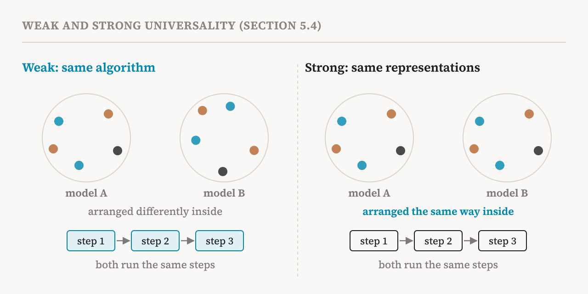

Parts 7 and 8 covered two hypotheses about what is inside a model: concepts as directions, and more concepts than dimensions. This part covers the last two in the book's chapter, sections 5.3 and 5.4 (pages 30–31). They are about something else: who can read a model's insides, and whether what we learn about one model carries over to another.
The privileged access hypothesis
A growing family of methods uses a language model to interpret itself: asking it what its activations mean, or training it to describe them. The book names the idea that justifies these methods the privileged access hypothesis. A language model used to interpret itself can, when prompted or trained in the right way, reach internal variables and intermediate computations that cannot be reliably recovered from its outward behaviour alone. That would give it an advantage over outside observers as an interpreter of its own behaviour.
The wish is old. The ability of a system to monitor and judge its own reasoning, called introspective monitoring, has long been a goal in AI. As early as 1977, a rule-based medical expert system called MYCIN, which advised doctors on infections, had an explanation module that could tell them why it had reached its conclusions. The book sees self-explaining language models as a modern continuation of that effort.
There is a big difference, though. A rule-based system can simply show the rule it followed. A modern language model computes in a highly nonlinear way, with no rules written down anywhere. Mechanistic tools can reverse-engineer parts of that computation, but they are technically complex, which limits who can use them and how far they scale. The privileged access hypothesis proposes a shortcut: the model's internal states already contain information about its own computation, such as latent beliefs or intermediate plans, so the model could learn to put that information into words directly. That would make self-explanation a scalable complement to mechanistic analysis.
The evidence for it
The most direct evidence, according to the book, comes from recent experiments on concept injection. Researchers take a direction that represents a concept, often found with the difference-in-means method of part 7, and add it to the model's activations without telling the model. Then they ask the model whether it notices anything. Even without any training for this, models are sometimes aware of the injected concept and can name it. A related 2026 study found that models can recognise when random noise has been applied to their activations.
A second, less direct line of evidence comes from explainer models: a model fine-tuned to describe the activations of a target model in words. In practice, explainers are usually built from a copy of the target model itself, and that usually works better than starting from a different model. This suggests the target model already encodes much of what is needed to interpret its own activations, and that fine-tuning draws out and sharpens an existing ability rather than creating one from nothing.
The companion notebook tests exactly this. It asks three models to describe the internal features of Llama-3.1-8B: Llama-3.1-8B itself, its instruction-tuned version, and the older Llama-3-8B. If privileged access holds, the model explaining itself should do best.
The evidence against it
The book also reports negative results. A 2026 study found that models predict their own sampling temperature, a setting that controls how random their outputs are, no better than they predict the temperature of other models. That suggests that what looks like introspection may be general reasoning about how model-like systems behave, not access to the self.
Other recent work questions whether explanations based on internals give any practical advantage over watching behaviour. One study found that tools for reading activations, including explainer models known as activation oracles, gave AI agents no advantage over agents that only read transcripts, when the task was to predict how a model would behave in other situations. Another showed that standard benchmarks for putting activations into words can be solved without any access to the target model's internals at all.
![Two columns of evidence on whether a model can read its own internals. For: models sometimes notice concepts injected into their activations, and explainer models trained from a copy of the target model work better than ones trained from other models. Against: models predict their own sampling temperature no better than other models' temperature, tools that read activations gave agents no advantage over reading transcripts, and standard benchmarks for verbalising activations can be solved without the target's internals. A verdict at the bottom reads: possible for some tasks, not universal or reliable.](../../images/inside-09-access-en.png)
The book's summary is precise. These results show that privileged access is possible for certain tasks under favourable conditions. They do not show that it is universal or reliable. The hypothesis should be treated with caution, because significant failure modes and limits remain. Parts 22 and 32 return to self-explanation in detail.
The universality hypothesis
The fourth hypothesis asks whether different models end up with the same insides. The book states it under its recent name, the Platonic representation hypothesis: models trained independently on similar tasks tend to develop similar internal representations or algorithms, which often approximate a canonical form determined by the task itself. How strongly they converge depends on factors such as model size, architecture and training data.
The name, from a 2024 paper, alludes to Plato's allegory of the cave. Different models see different shadows of the world, through different data, yet they may converge on similar representations of the reality that casts them. The older word for the same idea in interpretability is universality, which the 2020 Circuits programme proposed after finding similar features, such as curve detectors, in many different image models.
Weak and strong universality
The book separates two levels of convergence. Weak universality means that models converge on the same algorithms or recurring computational patterns, even if they encode them in different internal representations. Strong universality is the bolder claim that the representations themselves converge on a shared canonical form.

Weak universality has good support. Similar attention patterns, features and circuits keep turning up across models, tasks and scales. Strong universality has less. It is usually tested with representational similarity metrics, which score how alike the internal representations of two models are, and recent studies have found the results of those tests to be fragile. Representations can also diverge because of differences in architecture, in training data, or in the path training happened to take.
Why universality matters
The stakes are practical. If strong universality holds, detailed mechanistic findings, and the methods built on them, may carry over readily from one model to another. If only weak universality holds, findings may depend on the model family and the task. Then even a complete mechanistic understanding of one model, the goal of the "ambitious" research direction of part 31, might fail to generalise to others. Every insight would have to be earned again, model by model. So knowing how far universality reaches is essential for judging the promise and the limits of each research direction.
The four hypotheses together
The book closes its chapter by placing the four hypotheses side by side.
| Hypothesis | Claim | What it supports |
|---|---|---|
| Linear representation (part 7) | Concepts are directions in activation space | Finding, measuring and steering features with linear tools |
| Superposition (part 8) | Models store more features than they have dimensions | Looking for features as directions or more complex shapes, not single neurons |
| Privileged access (part 9) | A model can read and report its own internals | Using models to interpret themselves |
| Universality (part 9) | Models trained on similar tasks learn similar things | Expecting findings to transfer from one model to another |
Each hypothesis holds in some settings and fails in others, and every technique built on one inherits its limits. The next group of parts turns to the techniques built on the first two: dictionary learning, which tries to recover a model's features by assuming they are sparse directions in superposition.
| Term | Meaning |
|---|---|
| Privileged access hypothesis | The idea that a model can report its own internal variables better than outside observers can |
| Introspective monitoring | A system's ability to watch and judge its own reasoning |
| Concept injection | Adding a concept's direction to a model's activations to see if the model notices |
| Explainer model | A model trained to describe another model's activations in words |
| Activation oracle | A kind of explainer model that answers questions about activations |
| Sampling temperature | A setting that controls how random a model's outputs are |
| Universality | The idea that different models learn similar features, algorithms or representations |
| Platonic representation hypothesis | The recent name for universality: models converge on a shared picture of the world |
| Weak universality | Convergence on the same algorithms, possibly with different representations |
| Strong universality | Convergence on the same representations themselves |
| Representational similarity metric | A score of how alike two models' internal representations are |
Next, part 10 begins the group on finding features, with the sparse coding problem and sparse autoencoders.